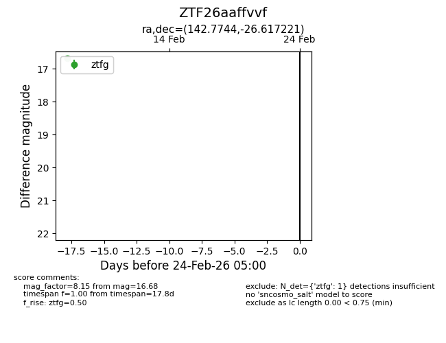
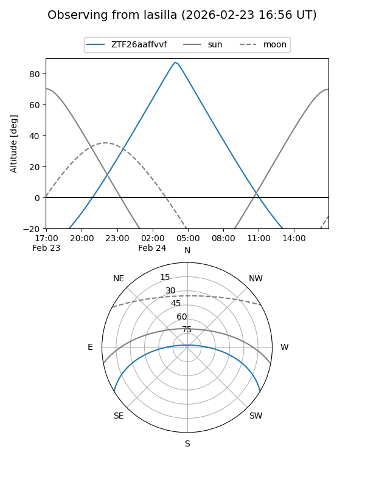
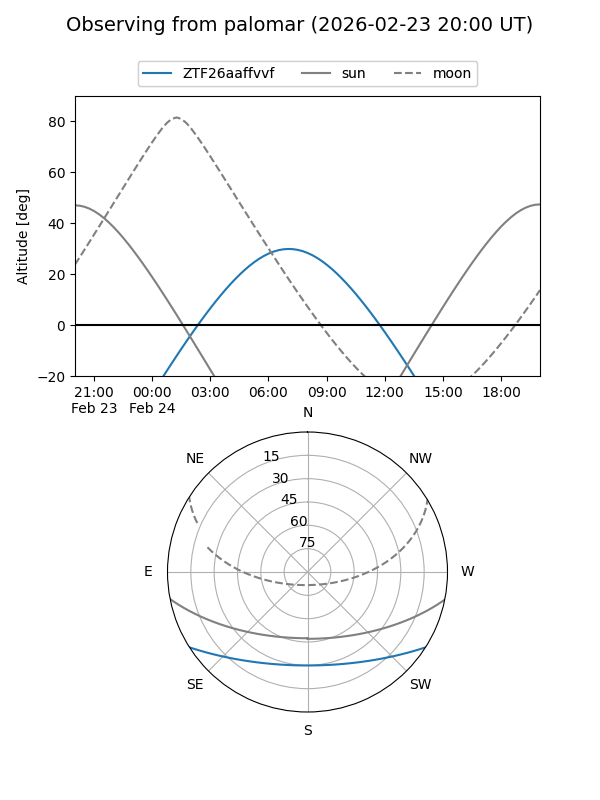

ZTF26aaffvvf
Target ZTF26aaffvvf at 2026-02-24 09:08
Aliases and brokers:
FINK: link
Lasair: link
ALeRCE: link
alt names
ZTF26aaffvvf (ztf,fink_ztf)
Coordinates:
equatorial (ra, dec) = 142.7744,-26.61722
equatorial (HMS+DMS) = 09:31:05.86,-26:37:02.00
galactic (l, b) = (256.8510,+17.83314)
Flags:
Photometry:
last ztfg=16.68
1 ztfg detections
Lightcurve

Visibility


Additional plots